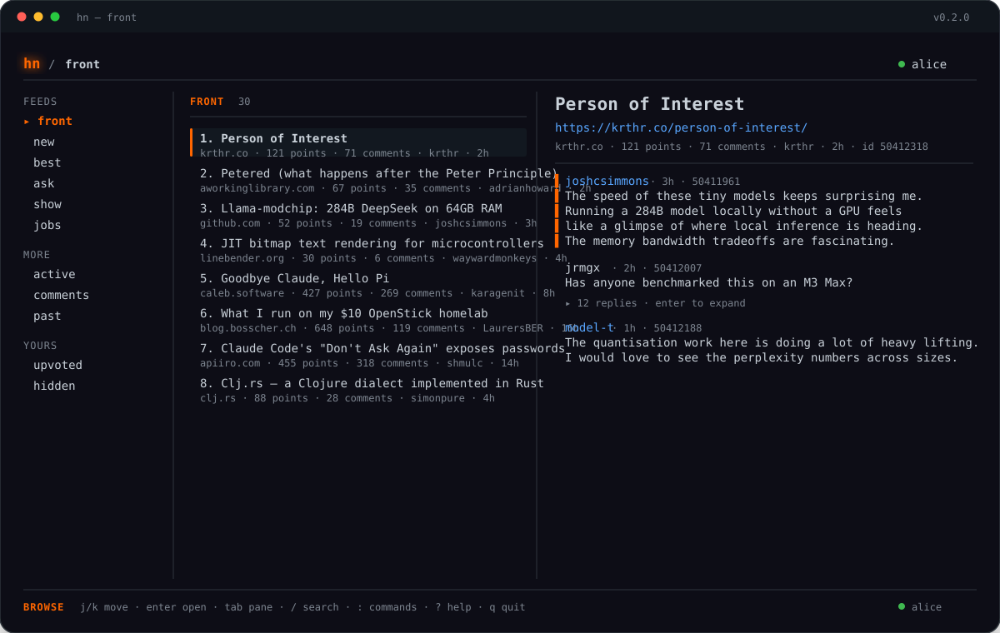

Read
Front page, Ask, Show, jobs, search, users, comments, and full threads.
Hacker News · in your terminal
An interactive terminal browser, a scriptable CLI, and structured JSON for agents. One Rust binary for macOS and Linux.
brew install kaushalvivek/tap/hn
Homebrew · Apple Silicon and Intel
curl -fsSL https://raw.githubusercontent.com/kaushalvivek/hn-cli/main/install.sh | sh
Static binary · installs to ~/.local/bin
Native packages: .deb · .rpm · .pkg.tar.zst · .apk

feeds · threads · search · composer · drafts
Front page, Ask, Show, jobs, search, users, comments, and full threads.
Vote, submit, comment, edit, favorite, hide, and flag without leaving the TUI.
Every command speaks JSON. Pipe it into jq, a dashboard, or another agent.
Static Linux binaries, native packages, Homebrew on macOS, and a tiny man page.
$ hn
front · new · best · ask · show · jobs · active · comments
$ hn thread 8863
32 comments · loaded in full
$ hn search "rust async" --sort date
SearchResults · page 1 of 62
$ hn front --limit 5 --json | jq -r '.entries[] | .title'
Llama-modchip: 284B DeepSeek on 64GB RAM, no GPU
The Reconstruction of Torn Documents
Writing as a thinking tool
hn opens the browser. hn front is line-oriented. --json is everywhere.
Open source · MIT